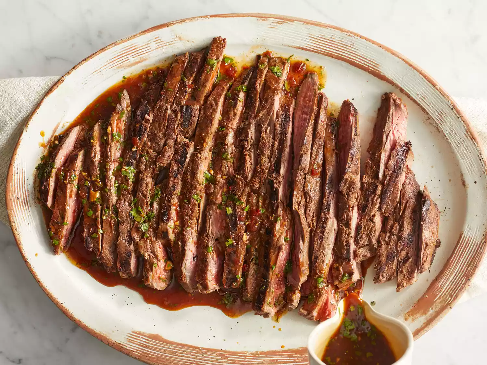

Carne Asada Recipe

Description
This carne asada recipe is just like dear old abuela used to make.
You'll need to sacrafice a cerveza to make it properly
but trust me its worth it to get a tad less drunk for this cause.
1lb Flank or skirt steak
2 Limes
1 orange
1 Mexican Lager
2 cloves of garlic
Salt and pepper
1 small bunch fresh cilantro
1 tablespoon olive oil
2 tsp cumin
1 tbsp dark brown sugar
Steps
- Mix together all ingredients in a bowl
- Add steak and let marinade for 2-24 hours
- Sear steak